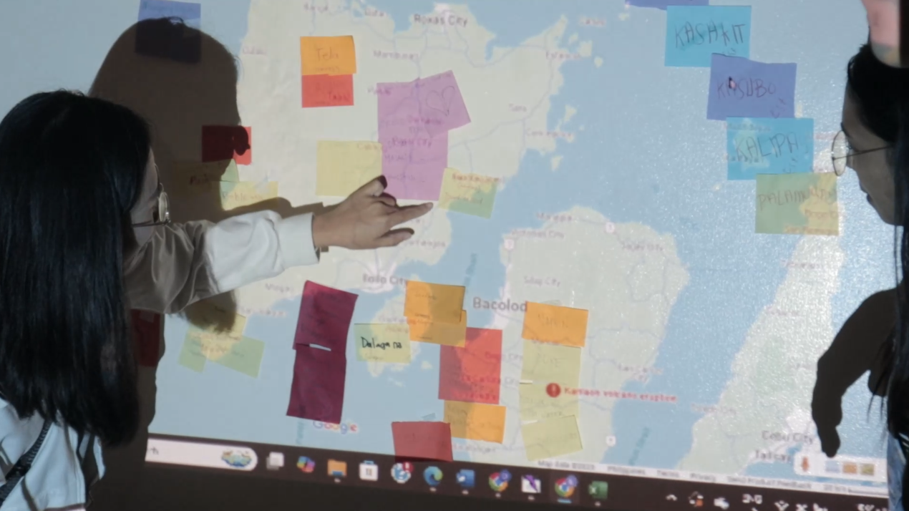
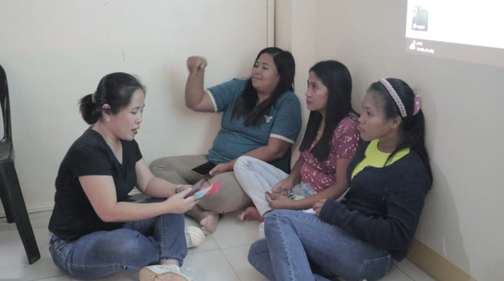
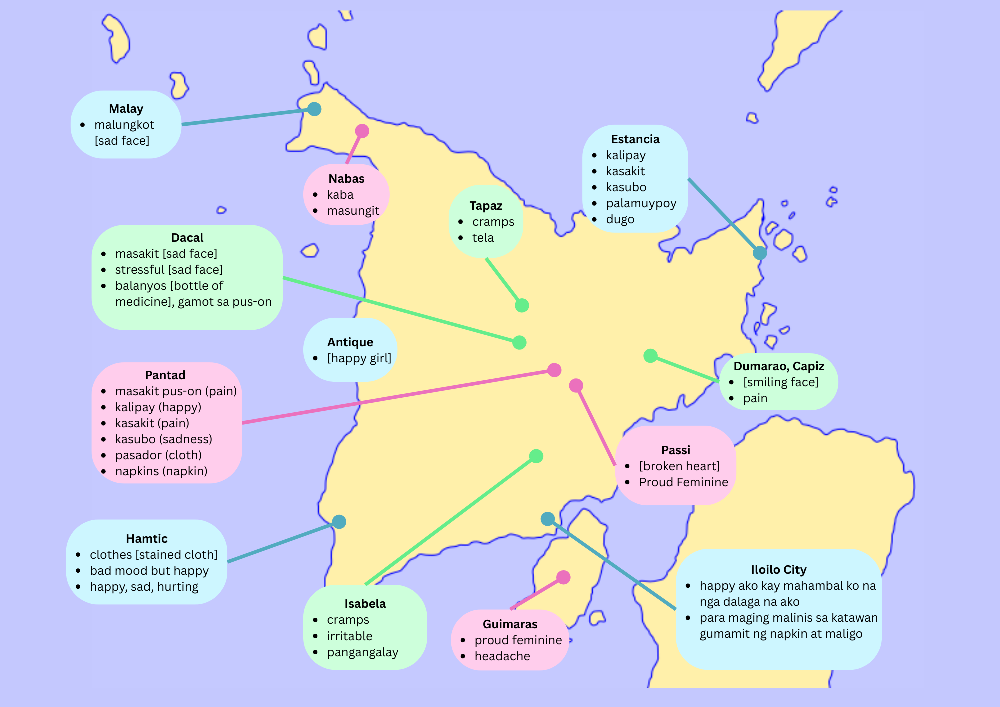

Istorya sang Bȧlatyagon
Critical Essay & Digital Installation by Xyh Tamura
Based on the report written by Roselle Leah K. Rivera, co-investigator, AI4PEP and ATIPAN Community Development & Gender Expert and Xyh Tamura, graduate student-intern, University of San Agustin, Center for Informatics with inputs from Alanna Panes, Jeriel Benedictos, Frances Marie deja-Montano and Miles Kaye Ermoso.
Developed through Creative Writing for Social Research Second Semester AY 2024-2025 with Marie Aubrey J. Villaceran, University of the Philippines Diliman
Istorya sang Bȧlatyagon was a pilot workshop, conducted in March 29, 2025 with 14 participants from Panay and Guimaras, that explored menstrual experiences through participatory storytelling and mapping as part of the Atipan+ Gender Audit. As an Atipan+ intern, I created the Istorya sang Bȧlatyagon methodology in collaboration with the Atipan+ team, which works with marginalized and vulnerable communities throughout Western VisayasZamora et al. 2024. “The ATIPAN Project: A Community-Based Digital Health Strategy toward UHC.” Oxford Open Digital Health 2 (January): oqae011. https://doi.org/10.1093/oodh/oqae011.. The research builds upon my previously developed Photostory Map or Makwela (mapa, kwento, larawan) methodologyThis was developed during a research for transport in UP Diliman in 2024, and later used in the 2024 Atipan+ Gender Audit, extending its participatory approach to address menstrual health specifically.
Menstrual health remains a critical yet overlooked issueHennegan, Julie, Zay Yar Swe, Kyu Kyu Than, Calum Smith, Lidwien Sol, Hilda Alberda, Justine N. Bukenya, et al. 2022. “Monitoring Menstrual Health Knowledge: Awareness of Menstruation at Menarche as an Indicator.” Frontiers in Global Women’s Health 3 (March):832549. https://doi.org/10.3389/fgwh.2022.832549., particularly in low- and middle-income countries like the Philippines, where stigma, inadequate education, and limited resource access create significant challenges for menstruators. This research project, titled "Istorya sang Bȧlatyagon: Raising Awareness and Sparking Conversations on Menstruation," explores the lived experiences of women and menstruators in the Panay region, aiming to address gaps in menstrual health literacy, accessibility, and policy implementation. The study investigates several key questions: How do socio-cultural factors shape menstrual experiences across different Panay communities? What primary barriers exist to menstrual health management in rural and indigenous settings? How effective are current educational approaches in addressing stigma? And crucially, to what extent can participatory artistic methodologies facilitate meaningful discussions on traditionally taboo subjects?
The research is situated within the "last-mile challenge" of water, sanitation, and hygiene (WASH) infrastructure in the PhilippinesUlep, Valerie Gilbert, Jann Trizia Talamayan, Lyle Daryll Casas, Jon Michael Villaseñor, Elmira Bacatan, Philippine Institute for Development Studies, and United Nations Children’s Fund. 2024. “The Last-Mile Challenge: Water, Sanitation, and Hygiene (WASH) in the Philippines.” Philippine Institute for Development Studies. https://doi.org/10.62986/dp2024.19., where access disparities disproportionately affect rural and low-income communities. Period poverty—the lack of access to menstrual products, facilities, and education—intersects with cultural taboos, effectively silencing menstruators and perpetuating gender inequality. While previous studies have emphasized school-based interventions for adolescent girls, this project broadens the scope by including diverse demographics and employing transdisciplinary methods to capture the physical, emotional, and social dimensions of menstrual health.
Creative writing and participatory arts form the methodological core of this research, bridging academic inquiry with community engagement. The Istorya sang Bȧlatyagon workshop integrates storytelling, performance, visual mapping, and collective narrative-building to position participants as knowledge co-creators rather than mere subjects. Through generating word-image clouds tied to geographic locations, crafting narratives from lived experiences, and performing these stories, participants reclaim agency over their menstrual journeys. This approach deliberately challenges extractive research paradigms by prioritizing local perspectives and emotional authenticity. The methodology's playful name—a Hiligaynon pun combining balatyagon (feelings) and bilat (vulva)—strategically disarms stigma through humor, creating a safe space for open discussion.
Through arts-based methods like word-image mapping and group storytelling, this workshop created a space for participants to share personal experiences of menstruation—from the pride of becoming a dalaga to practical debates about pasador cloths versus modern pads. The stories and maps produced not only provided data but also became tools for participants to reflect on generational shifts in attitudes. While the activity’s immediate impact was limited to the workshop setting, the facilitators observed enthusiasm for continuing these conversations in participants’ home communities.
This project begins by contextualizing menstrual health challenges in the Philippines, drawing on literature to underscore the urgency of arts-based, intersectional, and community-led interventions. It then details the Istorya sang Bȧlatyagon methodology, highlighting its participatory arts-based approach and geographic mapping techniques. The findings section analyzes emergent themes such as positive associations with womanhood, traditional versus modern practices, and openness in discussions. The critical reflection evaluates the method’s strengths and limitations. The conclusion synthesizes the project’s dual contributions: advancing menstrual health awareness in Panay and demonstrating how creative methodologies can democratize knowledge production. By centering storytelling and participatory art, this project documents lived experiences while creating community spaces for dialogue, contributing to a growing movement that recognizes menstrual health as integral to gender equity in the Philippines.
Literature Review
This project investigates the intersection of two vital scholarly currents: menstrual health as a gendered and socio-spatial issue in Panay, Philippines, and the application of participatory, arts-based methodologies that privilege lived experienceRivera, Roselle Leah K. 2001. “Finding the ‘Me’ for Building the ‘We’: Building Community Based Support Groups for Survivors of Violence Against Women.” Review of Women’s Studies 11 (1–2). https://www.journals.upd.edu.ph/index.php/rws/article/view/2986. . By examining menstrual health through creative research approaches like the River of Life method, this study contributes to broader conversations surrounding menstrual equity while advancing decolonizing research practices within the Philippine context.
Menstrual Health
Menstrual health encompasses physical, mental, and social well-being related to the menstrual cycle. In LMICs, disparities in water, sanitation, and hygiene (WASH) infrastructure exacerbate period poverty—defined as limited access to products, facilities, and education. The Philippines exemplifies this challenge: while urban areas like Metro Manila report better WASH coverage, rural regions such as Panay face significant gaps, with poor households lacking basic sanitationEllis et al. 2016. “WASH Challenges to Girls’ Menstrual Hygiene Management in Metro Manila, Masbate, and South Central Mindanao, Philippines.” Waterlines 35 (3): 306–23. https://doi.org/10.3362/1756-3488.2016.022.. Schoolgirls in Masbate, for instance, struggle with overcrowded latrines and unreliable water access, leading to absenteeism. These logistical barriers intersect with cultural taboos; menstruation is often shrouded in silence, reinforcing shame and misinformation.
Recent scholarship advocates for a holistic shift from menstrual hygiene management (MHM) to menstrual health, emphasizing empowerment and social equityHead et al. 2024. “Systematic Review of the Effectiveness of Menstrual Health Interventions in Low- and Middle-Income Countries in the East Asia and Pacific Region.” The Lancet Regional Health - Southeast Asia 20 (January): 100295. https://doi.org/10.1016/j.lansea.2023.100295.. For example, Efendi et al. (2023)Efendi et al. 2023. “Women’s Empowerment and Contraceptive Use: Recent Evidence from ASEAN Countries.” PLOS ONE 18 (6): e0287442. https://doi.org/10.1371/journal.pone.0287442. link menstrual literacy to broader gender equality outcomes, while Pascua et al.Pascua et al. 2023. “Menstrual Leave: Bridging the Gap for Women’s Health and Workplace Equality in the Philippines.” SSRN Electronic Journal. https://doi.org/10.2139/ssrn.4505008. (2023) highlight policy gaps, such as the lack of menstrual leave protections in workplaces. However, most studies focus narrowly on adolescent girls in schools, neglecting rural communities, working women, and non-binary individuals Graziottin et al. 2024. “Urogenital Health and Intimate Hygiene Practices among Filipino Women of All Ages: Key Issues and Insights.” Philippine Journal of Obstetrics and Gynecology 48 (3): 131–44. https://doi.org/10.4103/pjog.pjog_22_24.. This project addresses this gap by centering diverse menstruators in Panay and exploring how geographic and socio-cultural contexts shape their experiences.
Arts-Based Research
Traditional menstrual health research relies on surveys and focus group discussions (FGDs), which risk extractive dynamics and researcher biasFoster, Victoria 2015. Collaborative Arts-Based Research for Social Justice. London: Routledge. https://doi.org/10.4324/9780203077450.. Participatory methods, such as photovoice and story mapping, offer alternatives by privileging participants’ voicesMcMorrow et al. 2023. “Use of Photovoice in Sub-Saharan Africa: Illustrations and Reflections From Research in Uganda.” International Journal of Qualitative Methods 22 (October): 16094069231218863. https://doi.org/10.1177/16094069231218863.. Photovoice, for instance, empowers communities to document experiences through photography, though its reliance on technology limits accessibility in resource-poor settings. Story mapping, which layers personal narratives onto geographic data, captures spatial dimensions of health disparities but may overlook emotional nuancesAntoniou et al. 2021. “A Journey to Salamis Island (Greece) Using a GIS Tailored Interactive Story Map Application.” In Proceedings of the 7th International Conference on Geographical Information Systems Theory, Applications and Management, 187–94. https://doi.org/10.5220/0010440701870194. .
The Istorya sang Bȧlatyagon methodology bridges these gaps by combining geographic mapping with artistic expression. Drawing from these geographic and storytelling approaches with River of Life techniques and the Kuwentong Buhay methodologyPatiño, Bernard Julian A., Jasmine Cruz, and Marie Aubrey J. Villaceran. "Kuwentong Buhay: Storytelling in Sexual and Reproductive Health and Rights Research." In Pasya, Laya, AT Sining: Reshaping SRHR from the Margins, edited by Nathalie Africa-Verceles and Shebana Alqaseer, 104–143. Quezon City, Philippines: University of the Philippines Center for Women’s and Gender Studies, 2024., it invites participants to visualize menstrual experiences through word-image collages and storytelling, fostering collective reflection grounded in placeMassey et al. 1994. Space, Place, and Gender. NED-New edition. University of Minnesota Press. https://www.jstor.org/stable/10.5749/j.cttttw2z. . This approach aligns with Foster’s (2015) framework for arts-based research, which prioritizes empathy and agency, and challenges positivist norms by centering lived experience. By integrating geo-mapping with participatory storytelling, this project advances transdisciplinary dialogue, offering a model for culturally attuned menstrual health research.
Contributions
This project contributes to ongoing developments and research in both menstrual issues and research methods in three ways:
- Expanding demographic focus to include underrepresented groups in Panay.
- Demonstrating how arts-based methods like Istorya sang Bȧlatyagon can democratize knowledge production and challenge stigma.
- Providing a replicable framework for integrating geographic and affective data in health research.
While prior studies focus on adolescent girls in schoolsMahajan et al. 2017. “A Descriptive Study to Assess the Knowledge and Practice Regarding Menstrual Hygiene among Adolescent Girls of Government School of Shimla, Himachal Pradesh.” CHRISMED Journal of Health and Research 4 (2): 99. https://doi.org/10.4103/cjhr.cjhr_103_16. , this project includes indigenous and rural communities to reflect intersectional realities. Methodologically, it responds to critiques of positivist surveysMikulewicz et al. 2023. “Intersectionality & Climate Justice: A Call for Synergy in Climate Change Scholarship.” Environmental Politics 32 (7): 1275–86. https://doi.org/10.1080/09644016.2023.2172869. by offering a culturally grounded, creative alternative. By situating menstrual health within socio-spatial contexts and privileging creative expression, this study aligns with global calls for inclusive, community-driven interventions. Future research could further explore how such methodologies empower marginalized voices in policy advocacy.
Methodology
The project was conducted through a half-day workshop at the University of San Agustin in Iloilo City, involving 15 communities across Panay, each represented by 1–2 health coordinators (HCs). The workshop blended data collection with awareness-raising, using creative expression to circumvent cultural taboos around menstruation. The workshop adapted participatory methods like word-image mapping and group storytelling, with participants geographically tagging responses on a Panay map and served as the primary structure to facilitate discussion and analysis of personal and communal narratives. Participants included women and menstruators aged 15–50+ to ensure a broad range of menstrual experiences.
The participants were selected based on who were able to remain in the venue and to create a spread of participants across ages. Aside from raising menstrual awareness with the participants and opening the floor to discussion, another objective of the activity was for these to be the start of conversations in their communities with other young people. We had about seven facilitators who interacted with the participants, with one each guiding their discussions during the splitting into four groups phase, and about three who dealt with materials, documentation, and technical matters.
| Time | Duration | Activity | Materials |
|---|---|---|---|
| 8:30 | 20 minutes |
Introduction
|
Slides |
| 8:50 | 40 minutes |
Word/Image Cloud Mapping
|
Sticky Cards |
| 9:30 | 20 minutes |
Recalling Thoughts and Memories
|
Cards |
| 10:00 | 30 minutes |
Developing a Story / Break Time
|
|
| 10:30 | 30 minutes |
Story Presentation
|
|
| 11:00 | 45 minutes |
Debriefing & Menstrual Awareness
|
Menstrual Info Kit |
| 11:45 | End of Session |
The workshop unfolded in five phases: introduction and consent to the activity, word-image cloud mapping, crafting a presentation, presentation, and an awareness discussion.
The introduction explained what the nature of the activity was, and what it was important to talk about menstruation. We explained that the workshop was a safe space, and that if anybody felt uncomfortable at all at any point, they could leave the workshop. This was also the time when the participants gave their consent to participate in the activity.
Participants discussing the Word-Image Map. Participants were then asked to generate words and/or drawings of what they thought about upon hearing the word menstruation or regla in Hiligaynon. They mapped this on to a map of Panay which was projected onto a wall, creating a geographic and communal visualization of ideas related to menstruation. One of the participants suggested that they also write their locations on their papers before sticking them to better track their locations. These were all stuck to the wall, and were briefly asked to discuss what was put on the wall. This involved talking about why they placed the word or image they placed, or what were common and uncommon responses and why.
Video Documentation of Word-Image Cloud Mapping
Grouping off for Crafting a Presentation.They were then asked to create a presentation incorporating ideas and memories generated by the word-image cloud map, and could also present this story in whatever form they wanted. This had the participants split into four groups so they could have more intimate discussions, and one facilitator joined them to keep things organized and so that a presentation could be created on time. The first phase of this asked the participants to discuss a memory related to menstruation that might be associated either with the word-images they submitted, or other memories or thoughts brought to light by the discussion or the other responses on the map. Each member was asked to offer one memory each to the group. They were then asked to craft a presentation together using what they have recalled, with at least one memory each from each group member incorporated into the presentation. This could take the form of a story incorporating their memories with fictional characters, or something else.
The participants then presented what they’d planned, with the number of the group to present first chosen randomly instead of following the numeric order. They used the materials provided and objects around the room as props.
Video Documentation of Presentations
The final part of the activity was dedicated to debriefing, summarizing the session so far, and talking about menstrual practices such as when to see the doctor, what tools to use, and what services were available. This included prompts that compared facts and myths of menstruation. This generated additional discussion amongst the group while raising awareness at the same time.
As a half-Ilonggo researcher from Manila, I worked with the Atipan+ team who were situated in Panay and regularly worked with rural communities. Many co-facilitators were included in the workshop who were local to Panay to mitigate issues with positionality and communication. The workshop’s informal, non-hierarchical structure (e.g., sitting in circles, sharing snacks) countered extractive research norms. Participants retained ownership of their narratives, with options to redact details post-workshop.
To ensure rigor, the session was recorded and participant responses were also recorded. The choice of word-image cloud mapping created definite and discrete entries that could be mapped and put together as data. Clear themes were also developed by the participants for their presentations.
Findings and Analysis
In general, the session was very lively, with participants eager to discuss and join in. The participants learning about the name of the activity seemed to open the floor. The humor of the title instantly keyed the participants into the openness of the space to these topics: how and what would be discussed. The participants' presentations often dealt with comparisons: then vs. now, traditional methods vs. new methods, young vs old experiences of menstruation.
Positive Feelings Around Menstruation
Though pain and discomfort were major feelings that were reported relating to menstruation, there were also quite a large number of expressions of positive feelings and feelings of womanhood. They also talked about how one would feel refreshed after menstruation, and it was a way for the body to cleanse itself.
"Happy ako kay mahambal ko na nga dalaga ako"
For the participants, these positive feelings came about because this meant that things were going normally if their period was regular and that they weren’t pregnant or having some health issue. The menstrual cycle was also a symbol of womanhood. For their menarche, this was often accompanied by a feeling of being truly a dalaga, since the menarche was seen as a mark of coming of age.
Visualization of responses as a word cloud
kalipay proud feminine [smiling face] [happy girl] bad mood but happy happy, sad, hurting happy ako kay mahambal ko na nga dalaga na ako emotional kasubo [broken heart] malungkot [sad face] happy, sad, hurting kasakit pain masakit [sad face] cramps masakit pus-on headache happy, sad, hurting pangangalay gamot sa pus-on palamuypoy pangangalay dalaga na proud feminine [happy girl] happy ako kay mahambal ko na nga dalaga na ako clothes [stained cloth] tela pasador [tree] [branch with leaves] nelagang dahon [leaf] balanyos [bottle of medicine] balanyos omega gamot sa pus-on bad mood masungit bad mood but happy irritable emotional stressful [sad face] kaba dugo para maging malinis sa katawan gumamit ng napkin at maligo napkins para maging malinis sa katawan gumamit ng napkin at maligoThese feelings of happiness are often felt in tandem with other feelings, such as sadness, stress, or pain. Menstrual events were experienced as events with mixed feelings, since it also meant for them that certain plans could be cancelled, or certain activities could not be done because of menstruation.
Visualization of responses as a menstrual cloth or pasador
Dynamic weaving of menstrual affects: Animated visualization of word frequencies from participant responses
Each colored square represents an affect category, with frequency proportional to its occurrence in the responses.
Traditional and New Practices for Menstruation
One of the major themes that continued through the discussion of menstruation was comparisons of traditional practices involving botanical treatments and new practices including napkins and menstrual cups.
The use of traditional botanical treatments was discussed, including the oral or topical application of plant based medicines such as the balanyos. The participants exchanged botanical practices, such as what could be boiled and drank, or the preparation of plants. This also included discussion around using manufactured, drugstore medicines, which they expressed also help, especially since access to these was easier.
The comparison of the pasador, the traditional menstrual cloth, and new menstrual hygiene products such as sanitary pads, tampons, and menstrual cups were also brought up. It was stressed by the participants how important it was to clean the cloths or dispose of the menstrual products properly to ensure personal and environmental cleanliness.
“Tatay ko ang nag tahi sang pasador para sa akun.”
In discussions related to hygiene, traditional beliefs surrounding when to bathe and how were brought up. The participants brought up their past practices which differed per region, where it was better not to bathe at certain times. For example, one practice was that it was alright to bathe during the first day of menstruation, but not the days after. Or that bathing made more viscous or clotted menstrual discharge. Nowadays, bathing has largely been accepted as part of regular practice during menstruation. They brought up that young people even avoid bathing, and bathing was encouraged during menstruation.
“Dapat maligo talaga para malinis ang katawan”
There were also changes in what comfort foods were available to have during menstruation such as fruits and sour food from before, and drinks and candies being available now. The eating of iron-rich foods was discussed as something that could aid with nutrition during menstruation but also how eating certain types of food such as sour food does not typically affect menstruation.
Other practices that were no longer used but shown during presentations were actions such as jumping or skipping steps on a flight of stairs.
Openness around Discussing Menstruation
"Daw sensitibo gid ko sang grade school, ginatago gid namon ang regla namon."
Participants stated that menstruation was less openly discussed in the past. Many of the women during their menarche were not sure what to do when it came. It was brought up that nowadays, there is a lot more openness surrounding the topic, among everybody. This meant that there was more awareness all around for both young girls dealing with menarche, women dealing with regular menstruation, and older women regarding menopause. Huya or shame was not among the words that were placed during the word-image cloud.
"Wala na na huya-huya subong."
The participants were eager to discuss the issue, since it wasn't often discussed. Most health activities were more general for general audiences, but this activity collected people in the room who experienced menstruation, so they were able to discuss this openly.
"Sa amon lang na ya, kay hindi na kainchindi ang mga lalaki"
Menstruation and Health
For the participants, regular menstruation was a marker of health. This was why there was happiness when it arrived, and great concern when it was irregular or unusual, or did not arrive.
The lack of menstruation that could signal pregnancy also had with it anxieties and the implications of pregnancy. Pregnancy meant that they could not do certain activities anymore, and that they would have to be responsible for a child, which also had to be taken into account in personal finances.
“Kung hindi mag abot, kag naga busong ka, hindi ka na ka obra.”
One major discussion that arose was clarification of when one could and couldn’t get pregnant in the menstrual cycle. It discussed when the fertile window was and when it wasn’t, but there was often risk because menstrual cycles were often unpredictable. It was generally accepted that one had lower risk of pregnancy if one had sex a week before menstruation, but after the awareness activity, it was accepted that no time during the cycle was completely free from risk.
“Nastress ako, ang menstruation ko nag last sobra gid sang two days. Malakas.”
Irregularity of cycles was discussed, which happened due to stress, lack of sleep, or poor nutrition. There was also talk about when irregular conditions arose during the menstrual cycle, such as prolonged menstrual flow that went on longer than usual. These were discussed by the group, as well as what were normal symptoms to expect during menstruation, perimenopause, and menopause.
Confusion around Questions
The last section of the activity involved looking at slides relating to myths and facts around menstruation. These statements were separated into myths and facts. Some examples of these were "Every woman gets her period at the same age" and "Swimming during your period is unsafe."
In general, these myths and facts led to interesting discussions, but in the end, these myths and facts that formed rather absolute statements could not contain the nuances of menstrual experiences. It's important that any awareness activities be sensitive to the local context.
One example of a contentious statement was "Menstrual blood is dirty", which most of them answered yes to. However, the fact part of the statement was that menstrual blood is not dirty. After some debate and discussion, the group settled on how menstrual blood by itself isn't dirty, but left uncleaned, it would become a hygiene issue. Though these statements were effective in stimulating discussion, perhaps it's better to use more open ended statements to facilitate these types of clarifications.
“Naga baho na kung hindi limpyuhon!”
Critical Reflection on the Method
The Istorya sang Bȧlatyagon methodology, rooted in arts-based practices, revealed both the potential and inherent complexities of using participatory, imaginative approaches in social research. By centering storytelling, word-image mapping, and performance, the method accessed dimensions of experience that conventional surveys or interviews could not, while also surfacing tensions between structure and freedom, individual and collective expression, and researcher expectations versus participant realities. The presentation format for expressing oneself seems to be quite effective for Filipino communities, considering we have a strong tradition of orality and performance.
The methodology’s title—a pun blending balatyagon (feelings) and bilat (vulva)—acted as a literary device to disarm stigma (JP’s intervention). This seemed to me, to have flipped a switch in the room, instantly creating a space where participants knew what the activity was going to be, and how they would approach the topic.
The word-image cloud mapping allowed participants to articulate their thoughts and ideas using different modalities, and also see all their ideas displayed for each other to create a collective idea or affect cloud. This allowed us to discuss commonalities and specificities of experience, and not see ideas as isolated and alone, but as part of a greater cultural context.
There was a tension on the structuring or destructuring of the activities, where some aspects of it could have had a bit more structure, and some parts could have had more freedom. It was generally helpful that everybody was eager to participate and the group was lively, but this also meant that the conversations and topics could easily derail the main topic of menstruation. There could have been clearer guide questions for each phase, but particularly for the discussion of the word-image cloud map. As for the presentations, these were initially formulated to be narrative stories just to give the participants more handholding as to what to create, but they really took initiative and came up with thier own forms, such as a role played class presentation in one. The facilitators’ presence during the presentation crafting, though helpful in allowing the participants to finish in timely manner, most certainly colored the final output of the presentations, and it would have been interestting to see what would have emerged had they been left to their own devices.
Geographical Placements of Menstrual Experiences in Panay
The word-image cloud map was also intended to create discussions surrounding the geography and how that affected menstrual experiences, but beacuse partipants came from all over Panay, the map projected was the entirety of Panay with its surrounding areas. I think this made the map not as highly generative in creating discussions surrounding place, since it was too large. Participants could not point to specific areas where they had lived experiences. The geographic information, however, could still find some use when superimposed over mappings of health services in and around the area.
Interactive Map of Menstrual Experiences in Panay
Click on any marker to see details from that location.
In formulating this method, I initially was not sure what participants were willing to do and what they were willing to engage with. I was afraid that open-ended storytelling or mapping menstruation onto a geographic space might feel intrusive or burdensome, especially since presentations and sticking paper on a wall might be physically tiring. However, participants readily embraced the Istorya sang Bȧlatyagon’s playful title, contributed many word-image associations, and crafted presentations readily. This receptiveness likely reflects Filipino oral and performative traditions, where collective narration thrives in informal, relational spaces. It seemed to help that we had all gathered on the floor, disrupting the lecture-listener atmosphere that can appear in these kinds of arrangements. The methodology’s success revealed that creativity was not an add-on but a natural conduit for discussing taboo and personal topics.
Conclusion
This project made dual contributions—both in advancing understanding of menstrual health in Panay and in demonstrating the value of arts-based, participatory methodologies. Content-wise, it revealed how rural Ilonggo communities navigate menstruation with pragmatism and even pride, blending traditional botanical knowledge with modern products while challenging dominant narratives of shame. The activity's revealing of the absence of expected stigma and the emphasis on communal support (e.g., trading herbal remedies) shows that as a gender audit, medical and social developments and interventions have been quite effective in and around Panay. Later developments should continue to underscore the need for localized, culturally attuned menstrual health interventions.
Methodologically, Istorya sang Bȧlatyagon proved that creative writing and arts-based practices—word-image mapping, storytelling, and performative sharing can facilitate research by creating a space to tackle affective topics, and allowing participants to have agnecy in the research itself. The method’s ability to engage people both personally and communally enabled expressions of lived experience that surveys might miss. However, challenges like the limitations of projected maps and the tension between structure and freedom highlighted areas for refinement.
One important thing that could have been done in this activity is to have provided actual menstrual materials for the participants especially during the discussions on raising awareness. This would have enabled a tactile and practical angle on the topic, instead of being purely imaginary and discursive.
The geographical aspect of the study could also have been engaged with, perhaps with participants being allowed to map their own lived geographies. There was also an initial idea of including weather and time into the discussion, which could show challenges and affective differences between experiences during sunny or rainy weather,
Though this activity focused on rural communities, it would deepen overall knowledges on menstruation for this activity to be tried among urban populations. Since this group of participants didn't seem to express shame, comparing different affective patterns between different communities would be informative and illustrative of cultural attitudes in communities. Transgender and non-binary individuals are also another population this could be expanded to.
The Istorya sang Bȧlatyagon workshop demonstrated how participatory arts methods can make menstrual health discussions more accessible and engaging in rural Panay communities. By centering participants’ voices, the activity surfaced tangible insights: the pride tied to dalaga identity, the practicality of comparing pasador cloths with modern pads, and the generational decline in stigma. While the workshop’s small scale (14 participants) limits generalizability, its lively dynamics and open dialogue suggest promise for adapting similar methods elsewhere, with adjustments for local contexts, such as refining geographic mapping or including material demonstrations (e.g., menstrual products). Future iterations could further test this approach by engaging urban populations, transgender individuals, or broader age ranges. Crucially, the workshop underscored that shifting menstrual narratives requires not just data collection but fostering spaces where communities can share experiences without shame—a goal this project began to achieve through humor, collaboration, and creative expression.
Bibliography
Antoniou, Varvara, Paraskevi Nomikou, Konstantinos Papaspyropoulos, Odysseas Karatzaferis, Othonas Vlasopoulos, Christos Stentoumis, and Ilias Kalisperakis. 2021. "A Journey to Salamis Island (Greece) Using a GIS Tailored Interactive Story Map Application." In Proceedings of the 7th International Conference on Geographical Information Systems Theory, Applications and Management, 187–94. https://doi.org/10.5220/0010440701870194.
Efendi, Ferry, Susy Katikana Sebayang, Erni Astutik, Sonia Reisenhofer, and Lisa McKenna. 2023. "Women’s Empowerment and Contraceptive Use: Recent Evidence from ASEAN Countries." Edited by Thae Maung Maung. PLOS ONE 18 (6): e0287442. https://doi.org/10.1371/journal.pone.0287442.
Ellis, Anna, Jacquelyn Haver, Jon Villasenor, Amado Parawan, Mohini Venkatesh, Matthew C. Freeman, and Bethany A. Caruso. 2016. "WASH Challenges to Girls’ Menstrual Hygiene Management in Metro Manila, Masbate, and South Central Mindanao, Philippines." Waterlines 35 (3): 306–23. https://doi.org/10.3362/1756-3488.2016.022.
Evans, Rebecca Ruth Lane, Frances Griffiths, and Bronwyn Harris. 2024. "A Comparative Study of Menarche and Menstruation Knowledge and Experiences of Girls Aged 16-19 Years Old in Low-Resource Settings of the Philippines and the United Kingdom." Coventry: University of Warwick.
Foster, Victoria. 2015. Collaborative Arts-Based Research for Social Justice. London: Routledge. https://doi.org/10.4324/9780203077450.
Graziottin, Alessandra, Sybil Lizanne R. Bravo, Ryan B. Capitulo, Agnes L. Soriano-Estrella, and Mariles H. Nazal. 2024. "Urogenital Health and Intimate Hygiene Practices among Filipino Women of All Ages: Key Issues and Insights." Philippine Journal of Obstetrics and Gynecology 48 (3): 131–44. https://doi.org/10.4103/pjog.pjog_22_24.
Head, Alexandra, Chelsea Huggett, Pisey Chea, Brooke Yamakoshi, Heather Suttor, and Julie Hennegan. 2024. "Systematic Review of the Effectiveness of Menstrual Health Interventions in Low- and Middle-Income Countries in the East Asia and Pacific Region." The Lancet Regional Health - Southeast Asia 20 (January): 100295. https://doi.org/10.1016/j.lansea.2023.100295.
Hennegan, Julie, Zay Yar Swe, Kyu Kyu Than, Calum Smith, Lidwien Sol, Hilda Alberda, Justine N. Bukenya, et al. 2022. "Monitoring Menstrual Health Knowledge: Awareness of Menstruation at Menarche as an Indicator." Frontiers in Global Women’s Health 3 (March): 832549. https://doi.org/10.3389/fgwh.2022.832549.
Kabamalan, Maria Midea M, and Sanny Boy D Afable. n.d. "Workshop on the Review and Enhancement of Comprehensive Sexuality Education (CSE) Learning Resources 5–9 December 2022 | Whitewoods Hotel, Silang, Cavite."
Mahajan, Anjali, and Kanica Kaushal. 2017. "A Descriptive Study to Assess the Knowledge and Practice Regarding Menstrual Hygiene among Adolescent Girls of Government School of Shimla, Himachal Pradesh." CHRISMED Journal of Health and Research 4 (2): 99. https://doi.org/10.4103/cjhr.cjhr_103_16.
McMorrow, Shannon, and David Musoke. 2023. "Use of Photovoice in Sub-Saharan Africa: Illustrations and Reflections From Research in Uganda." International Journal of Qualitative Methods 22 (October): 16094069231218863. https://doi.org/10.1177/16094069231218863.
Michel, Janet, Annette Mettler, Silvia Schönenberger, and Daniela Gunz. 2022. "Period Poverty: Why It Should Be Everybody’s Business." Journal of Global Health Reports 6 (February). https://doi.org/10.29392/001c.32436.
Pascua, Eddora Janna, Angelica Biescas, Gianne Faye Macatangay, Maria Ronneth De Ocampo, and Laila Joshbeth Sandoval. 2023. "Menstrual Leave: Bridging the Gap for Women’s Health and Workplace Equality in the Philippines." SSRN Electronic Journal. https://doi.org/10.2139/ssrn.4505008.
Patiño, Bernard Julian A., Jasmine Cruz, and Marie Aubrey J. Villaceran. "Kuwentong Buhay: Storytelling in Sexual and Reproductive Health and Rights Research." In Pasya, Laya, AT Sining: Reshaping SRHR from the Margins, edited by Nathalie Africa-Verceles and Shebana Alqaseer, 104–143. Quezon City, Philippines: University of the Philippines Center for Women’s and Gender Studies, 2024.
Poledario, Sarah Jane A., Kristine A. Condes, Natasha Kay V. Chan, and Aileen G. Sypongco. 2024. "Menstrual Hygiene Management among Secondary High School Students," September. https://doi.org/10.5281/ZENODO.13901399.
Rivera, Roselle Leah K. 2001. "Finding the ‘Me’ for Building the ‘We’: Building Community Based Support Groups for Survivors of Violence Against Women." Review of Women’s Studies 11 (1–2). https://www.journals.upd.edu.ph/index.php/rws/article/view/2986.
Swenson, Ingrid, and Beverly Havens. 1987. "Menarche and Menstruation: A Review of the Literature." Journal of Community Health Nursing 4 (4): 199–210. https://doi.org/10.1207/s15327655jchn0404_3.
Tongson, Excelsa, and Nathalie Verceles. 2024. "Adolescence in Transition: Navigating Gender and Sexuality." In , 327–64.
Ulep, Valerie Gilbert, Jann Trizia Talamayan, Lyle Daryll Casas, Jon Michael Villaseñor, Elmira Bacatan, Philippine Institute for Development Studies, and United Nations Children’s Fund. 2024. "The Last-Mile Challenge: Water, Sanitation, and Hygiene (WASH) in the Philippines." Philippine Institute for Development Studies. https://doi.org/10.62986/dp2024.19.
Zamora, Pia Regina Fatima C., Jimuel Celeste Jr., Roselle Leah Rivera, John Paul Petrola, Raphael Nelo Aguila, Jake Ledesma, Miles Kaye Ermoso, and Romulo de Castro. 2024. “The ATIPAN Project: A Community-Based Digital Health Strategy toward UHC.” Oxford Open Digital Health 2 (January): oqae011. https://doi.org/10.1093/oodh/oqae011.